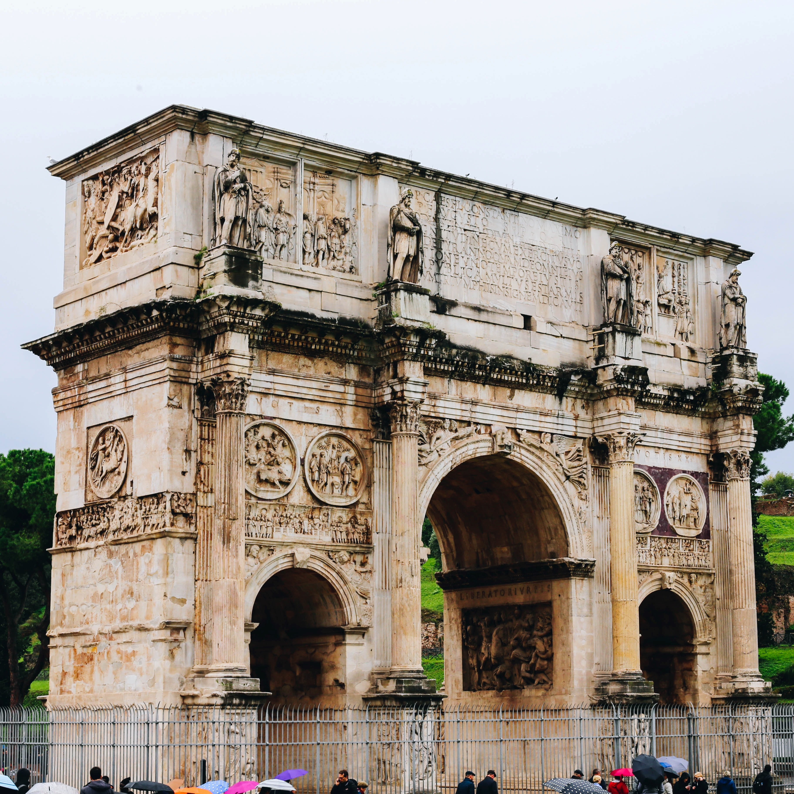
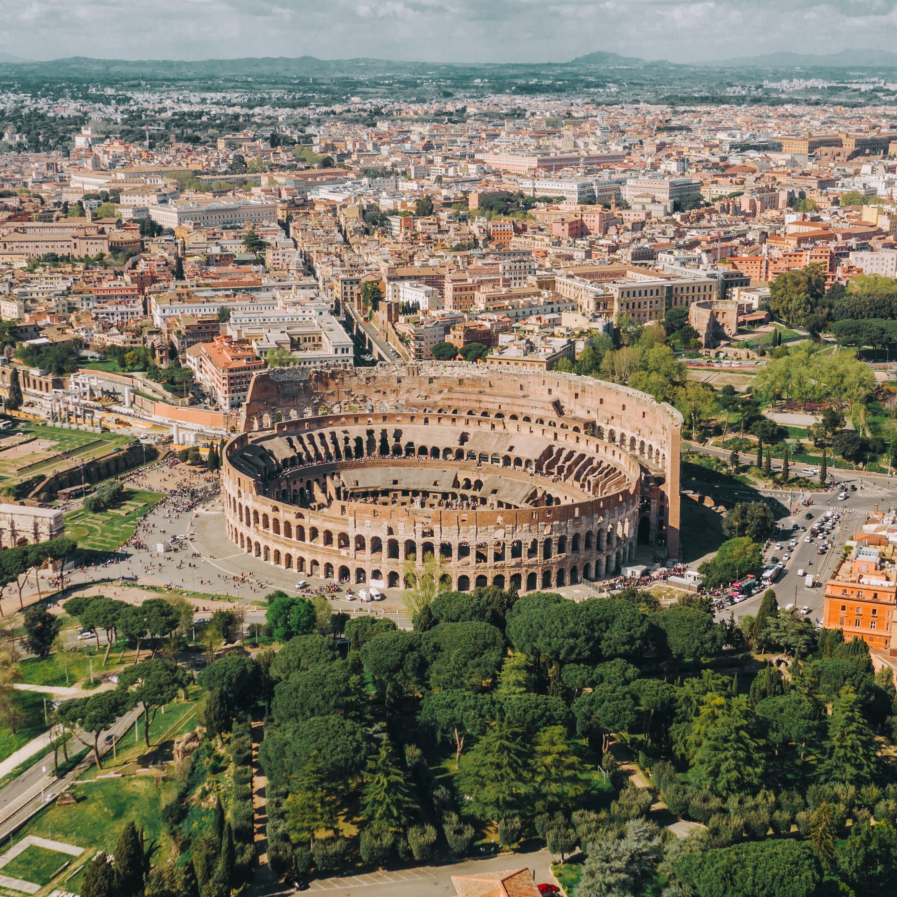
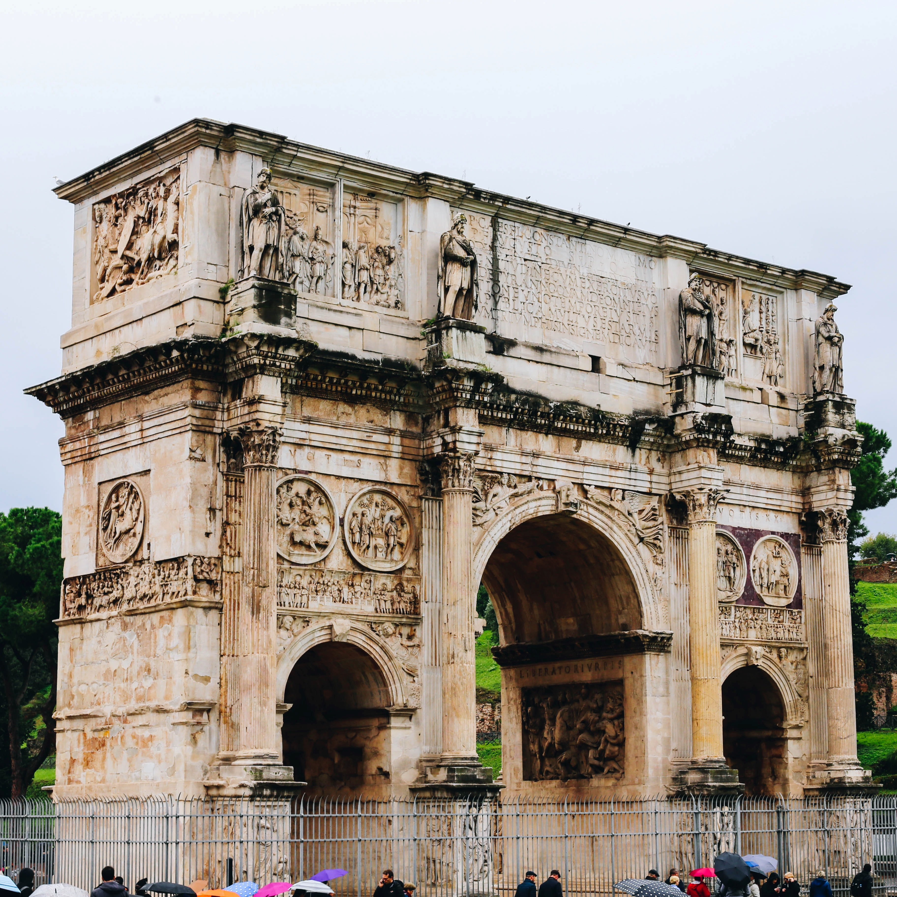
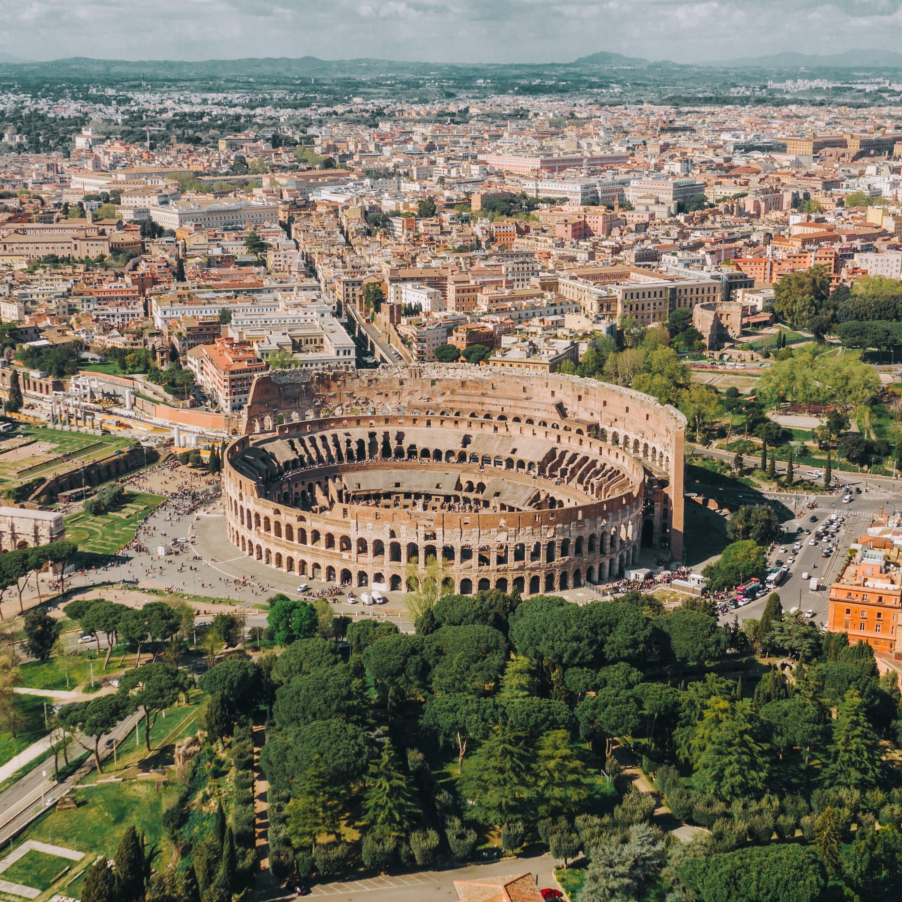

Another place I’d love to visit is the Italy Colosseum, also named as the Flavian Amphitheater, in Rome, Italy. According to Barbara Rogers (2019), it is the largest structure surviving the ancient Rome. Despite the damage of fire, earthquake, as well as its conversions into a fortress of the Frangipani Family, the pillaging of its stone for construction of palaces, and the constant pollution around it, the Colosseum creates a powerful impression of its original form. The construction began during Flavian Emperor’s reign as a gift to the Roman people. The massive structure is four stories high that includes eighty entrances to the amphitheater, seventy six for patrons, two for participants of events, and two exclusively for the emperor to use. As seen from its entrance, it can hold more than 50,000 spectators are its maximum capacity.
Since a flight from Philippines to Italy is non-stop, the flight duration takes for about 13 hours and 30 minutes. From the Leonardo Da Vinci International Airport, the person can book a road transportation going to Piazza del Colosseo which will take around 35-40 minutes.
There are other tourist spots to visit in Rome. One of it is the Villa Borghese Gallery and Gardens. It is one of the Rome’s largest parks that contains two Museums. It was built as a party villa and to house the Borghese art collection. The Gallery have artworks such as paintings, sculptures, mosaics, and reliefs, most are from the 15th to 18th century including the works of Raphael, Titian, Caravaggio, and Rubens (Rogers, 15 Top-Rated Tourist Attractions in Rome, 2020).
{kind=link}
{kind=link}